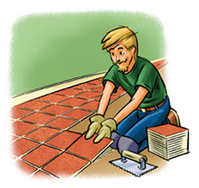
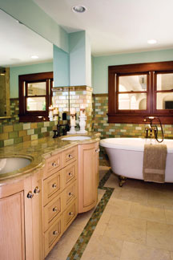
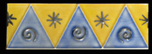
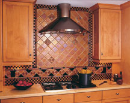
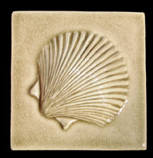
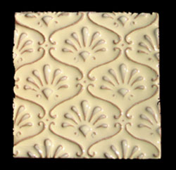

If you’re remodeling a kitchen or bath, or simply replacing worn-out flooring, consider environmentally friendly recycled-content tile.
Like other tile products, recycled-content tile will outlast most, if not all, other types of flooring. Tile resists scratching and is fire-resistant. And because it’s so durable, you will save money over the long haul by not having to replace it. (Consider installing a neutral color that will not become dated.)
Tile is easy to clean and, if glazed, won’t absorb liquids or release unpleasant odors like carpeting can. Another advantage over carpet is that tile doesn’t harbor potentially harmful mold spores, pollen, dust or dust mites. Unlike vinyl “linoleum” and many other flooring products - including some “green” options - tile doesn’t contain toxic chemicals and won’t give off fumes (a process known as outgassing).
The use of recycled materials reduces waste shipped to landfills and cuts down on mining of clay and other minerals needed to make conventional tile. Recycling also reduces energy use because making a product from waste material typically requires less energy than fabricating one from raw materials. This, in turn, helps slash fuel use in manufacturing and reduce environmental pollution.
Recycled-content tile can be used for floors, countertops and walls, and may be made from either recycled glass or wastes from mines or factories. Tiles come in two varieties - ceramic and glass. Ceramic tiles may be made from factory waste (known as post-industrial waste) generated by the production of conventional tiles. Some manufacturers, such as Crossville, produce tiles that contain 50 percent to 100 percent in-house manufacturing waste - waste that would otherwise have ended up in landfills.
Other products, such as the Debris Series from Fireclay Tile, combine post-industrial and post-consumer recycled wastes. The Debris Series tile consists of 26 percent recycled granite dust (post-industrial waste) from a granite-cutting operation. It also contains 26 percent recycled glass (post-consumer waste). Plus, the glazes used by this company contain no lead, so they’re safer for the workers who apply them.
Recycled-content glass floor tiles from UltraGlas contain 15 percent to 30 percent recycled glass. Blazestone tiles produced by Bedrock Industries are made from 100 percent recycled glass, as are the tiles from Sandhill Industries. Although recycled-content glass tiles are good for the environment, they are also prized by many interior designers because some types have special decorative qualities, such as translucent iridescence, not found in other tiles. Recycled tile for floors, walls and countertops is produced by many of the companies mentioned here and listed in the sources, below.
Tile installation is a job best handled by professionals or experienced do-it-yourselfers. A considerable amount of knowledge and skill is required, especially if you’re applying tile over uneven wood surfaces or have a complicated design in mind that requires a lot of tile cutting.
If you plan to hire a professional installer, it’s a good idea to line one up before you purchase the tile. Many installers like to order materials themselves so they have enough for the job and can obtain a contractor discount.
One of the most important requirements for a good tile job is a solid base. Concrete is one of the best substrates, provided it’s not cracked or uneven, but tile is also routinely applied over wood floors. Be sure that the subfloor is not warped or rotted and is adequately secured to the underlying floor joists. Problems with the subfloor may cause the tiles to come loose within a year or two, depending on foot traffic. Uneven subflooring can often be leveled using a self-leveling compound.
If the subflooring is severely warped or rotted, tear it out and replace it. Consider using a Forest Stewardship Council (FSC) certified plywood. FSC-certified wood products come from companies that grow, harvest and mill their woods in a sustainable manner.
Tile is applied using a thin-set mortar. The spaces between tiles are filled with grout. When installing tile over subflooring, it’s a good idea to use a rigid backerboard for a firm base. Thin-set mortar is typically applied over the backerboard to keep it from flexing. (Flexing may cause joints between tiles to crack and, even worse, may cause tiles to come loose.)
After the backerboard is secured, chalk lines need to be snapped on the floor, and the tiles can be laid out along the lines. When you need to make cuts, use a tile cutter or tile-cutting saw. You can rent or purchase these from a local home improvement center.
After tiles are set and the adhesive has dried, grout is applied in the gaps between tiles. Any film left on the tiles is removed with a damp sponge. Be sure to seal the grout after it dries to repel moisture and dirt and to prevent discoloration.
If you’d like to tackle the job yourself and you have no experience tiling a floor, wall or countertop, it would be wise to take a class or two first. Many home improvement centers offer free classes. If you know a local tile installer, you might consider hiring him or her for a couple hours of instruction. You also can find detailed instructions online or in one of the many home improvement how-to books.
Recycled-content tiles are available directly from manufacturers, at some flooring supply stores and at online green building materials outlets. To locate a specific product, you may want to contact manufacturers to find a local supplier. You can also check with your local home improvement centers to see if they carry recycled-content tile, as it continues to gain popularity.
Choosing recycled over conventional tile is a great way to green your home. Recycled tile even offers some unique designs you won’t find elsewhere.
When installing tile, consider using nontoxic thin-set mortars and adhesives. Many conventional products emit volatile organic compounds (VOCs) that could cause health problems. Look for low-VOC products such as American Formulating & Manufacturing’s (AFM) Safecoat 3 in 1 Adhesive, EcoTimber’s HealthyBond Flooring Adhesive or Envirotec’s Floor Covering Adhesive. Bostik also manufactures two no-VOC thin-set mortars.
Cost estimates for green flooring options, cost per square foot installed:
Recycled-content tile (from basic, tile-only installation to higher quality tile including new wood underlayment): $10 to $33
Conventional ceramic tile: $13
Stone tile: $22 to $178
Bamboo: $12
Oak strip: $9
Maple strip: $12
Cork tiles: $10
Wood laminate: $8
All-natural linoleum: $7
Cost estimates for installation of 100 percent recycled-material floor tiles, installed in a 12-foot-by-8-foot room, including underlayment (subflooring), spacers, mortar, grout and sealer:
Cost for materials only: $2,250
Contractor’s total, including materials, labor and markup: $3,200
(Costs are national averages and do not include sales tax.)
To clean tile or other counters without chemicals, sprinkle on baking soda, then rub with a damp cloth or sponge. For stains, make a baking soda-and-water paste and let it sit on the stain for several minutes. When dry, brush off and remove the residue. For a natural disinfectant, mix 2 cups of water with 3 tablespoons liquid soap and 20 to 30 drops tea tree oil.
Crossville
Fireclay Tile
Quarry Tile
Terra Green Ceramics
Aurora Glass
Bedrock Industries
Oceanside Glasstile Co.
Sandhill Industries
UltraGlas, Inc.
|
 KEITH WARD Green building expert Dan Chiras provides information and recommendations on energy-saving and eco-friendly projects. |
 OCEANSIDE GLASSTILE You can use tile for floors, walls, backsplashes and even countertops. Tile is low-maintenance and doesn’t release chemicals into the air in your house. When you select tiles made from recycled materials, you’re making a great green choice for your home. |
 FIRECLAY TILE When installing tile, consider using nontoxic thin-set mortars and adhesives. |
|
 OCEANSIDE GLASSTILE Get creative with patterns and color! You can mix and match different sizes and colors of tile to create an attractive mosaic. |
 FIRECLAY TILE To clean tile or other counters without chemicals, sprinkle on baking soda, then rub with a damp cloth or sponge. |
 FIRECLAY TILE To clean tile or other counters without chemicals, sprinkle on baking soda, then rub with a damp cloth or sponge. |